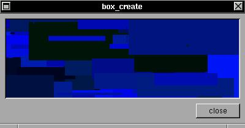

The XSTEP drawable box is a generic widget with expose and broadcast events linked to any user function. If you set the global variable animate to any non-zero value, the draw function will be continouslly called.SYNTAX
struct xtree *box_create(x,y,w,h,draw,color);EXAMPLEint x,y,w,h,color;
void (*draw)(struct xtree *),int);Create a generic 'drawbox', with a available GC and a minimum configuration, in position (x,y), size (w,h) and background 'color'. A function 'draw()' will be called in 'broadcast' or 'expose' events. Any additional event can be used with this widget. If the option 'animate' has value 1, then XSTEP will generate continuous 'broadcast' events (and draw() will be continuously called).
In this example, the verification "if(!animate) return;" is only to separate expose events from broadcast events (broadcast are generated only if animate have a non-zero value, but exposes can be generated).#include <xstep.h> void draw(struct xtree *t) { if(!animate) return; XSetForeground(display,t->gc,rand()%256); XFillRectangle(display,t->win,t->gc, t->aw/2+rand()%t->aw-rand()%t->aw, t->ah/2+rand()%t->ah-rand()%t->ah, rand()%t->aw/4,rand()%t->ah/4); downbox(0,0,t->aw,t->ah,invisible,t); } void xmain(int n,char *p[]) { window_create(0,0,400,180,"box_create"); box_create(8,8,-8,-40,draw,getcolor(-1,0,0)); animate=1; button_create(-8,-8,72,24,"close",window_close); }